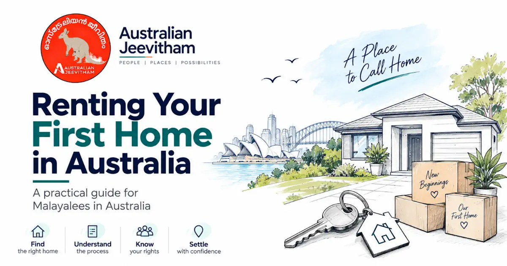

ഓസ്ട്രേലിയയിൽ ആദ്യമായി വീട് വാടകയ്ക്ക് എടുക്കുമ്പോൾ – വഴികാട്ടി Renting Your First Home in Australia – Malayalam Guide
ജോലിക്കായി ഓസ്ട്രേലിയയിലേക്ക് വരുന്ന മലയാളികൾക്ക് വീട് വാടകയ്ക്ക് എടുക്കുന്നതുമായി ബന്ധപ്പെട്ട ഔദ്യോഗിക നടപടികളും പ്രായോഗിക നിർദ്ദേശങ്ങളും മനസ്സിലാക്കാനുള്ള സമ്പൂർണ്ണ റഫറൻസ് ഗൈഡ്.
Last updated: September 2026 · Practical rental guide for new arrivals from Kerala

വാടക സാധാരണയായി ആഴ്ച കണക്കിലാണ് പരസ്യപ്പെടുത്തുന്നത്. ബോണ്ട് പരിധി, rent in advance, lodgement നടപടികൾ എന്നിവ സംസ്ഥാനവും ടെറിട്ടറിയും അനുസരിച്ച് മാറാം.
- Identity & Income Evidence
- Rental Bond
- Condition Report
- Open Inspections
- Utilities Setup
- Tenant Rights
- realestate & domain
ഓസ്ട്രേലിയയിൽ വീട് വാടകയ്ക്ക് എടുക്കുന്നത് കേരളത്തിലോ ഗൾഫിലോ ഉള്ള രീതിയിൽ നിന്ന് വളരെ വ്യത്യസ്തമാണ്. ഔപചാരികമായ അപേക്ഷകൾ, ബോണ്ട്, ഇൻസ്പെക്ഷനുകൾ, കർശനമായ നിയമങ്ങൾ എന്നിവയുണ്ട്. ആദ്യ വീട് ആത്മവിശ്വാസത്തോടെ വാടകയ്ക്ക് എടുക്കാൻ ഈ പേജ് ഓരോ ഘട്ടവും വിശദീകരിക്കുന്നു.
1. Understand How Renting Works in Australia (വാടക സമ്പ്രദായം)
- മിക്ക വാടക വീടുകളും ഉടമകൾ നേരിട്ടല്ല, റിയൽ എസ്റ്റേറ്റ് ഏജന്റുമാരാണ് (Real Estate Agents) കൈകാര്യം ചെയ്യുന്നത്.
- വാടക സാധാരണയായി ആഴ്ചയ്ക്ക് ആണ് പറയുന്നത് (ഉദാ: $500/week), മാസത്തിനല്ല.
- Fixed-term അല്ലെങ്കിൽ periodic tenancy agreement ഉണ്ടായേക്കാം; fixed-term കാലാവധി property-യും state rules-ഉം അനുസരിച്ച് മാറാം.
- Residential tenancy law is state- and territory-based. Bond limits, rent-in-advance rules, entry notice periods, repairs and bond lodgement processes are not identical across Australia.
2. Where to Search for Rental Homes (വാടക വീടുകൾ എവിടെ തിരയാം)
- realestate.com.au – A major Australian residential property listing platform.
- domain.com.au – Another major property listing platform across metropolitan and regional areas.
- flatmates.com.au – ഷെയേർഡ് അക്കോമഡേഷൻ / റൂമുകൾക്ക് (ആദ്യ മാസങ്ങളിൽ താമസത്തിന് ഏറ്റവും അനുയോജ്യമായ ഓപ്ഷൻ).
- ഫേസ്ബുക്കിലും വാട്ട്സ്ആപ്പിലുമുള്ള മലയാളി കമ്മ്യൂണിറ്റി ഗ്രൂപ്പുകളിൽ റൂം/വീട് ഒഴിവുകളുടെ വിവരങ്ങൾ പങ്കുവയ്ക്കാറുണ്ട്.
തട്ടിപ്പ് ജാഗ്രത (Scam Alert): വീട് നേരിട്ട് കാണാതെയോ ഏജന്റിനെ ഉറപ്പുവരുത്താതെയോ ഒരിക്കലും മുൻകൂറായി പണം അയക്കരുത്. വ്യാജ ലിസ്റ്റിംഗുകൾ ഉപയോഗിച്ച് പുതിയ കുടിയേറ്റക്കാരെ തട്ടിപ്പുകാർ ലക്ഷ്യമിടാറുണ്ട്.
3. Documents You Need for a Rental Application (ആവശ്യമായ രേഖകൾ)
Rental application requirements vary by agent and platform. Commonly requested evidence includes identity, income or employment details, references and information showing that you can meet the rent:
- പാസ്പോർട്ടും സാധുതയുള്ള ഓസ്ട്രേലിയൻ വിസ വിവരങ്ങളും (Passport & Visa Grant notice).
- Proof of income – recent payslips, an active employment contract, or a formal job offer letter.
- ആവശ്യപ്പെട്ടാൽ സേവിംഗ്സ് അല്ലെങ്കിൽ സാമ്പത്തിക ശേഷി തെളിയിക്കുന്ന ബാങ്ക് സ്റ്റേറ്റ്മെന്റുകൾ.
- Rental, employment or personal references if requested by the agent or application platform.
- ഓസ്ട്രേലിയൻ ഡ്രൈവിംഗ് ലൈസൻസ് അല്ലെങ്കിൽ മറ്റ് ലോക്കൽ ഐഡികൾ (ലഭ്യമാണെങ്കിൽ).
ടിപ്പ്: ഓസ്ട്രേലിയയിൽ മുൻകാല വാടക ചരിത്രം (Rental History) ഇല്ലെങ്കിൽ, നിങ്ങളെയും ജോലിയെയും വിസ സ്റ്റാറ്റസിനെയും പരിചയപ്പെടുത്തുന്ന ഒരു കവർ ലെറ്റർ എഴുതുക; വാടക നൽകാൻ ആവശ്യമായ തുകയുണ്ടെന്ന് തെളിയിക്കാൻ ബാങ്ക് സ്റ്റേറ്റ്മെന്റുകൾ ഒപ്പം നൽകുക.
4. Attending Inspections & Applying (ഇൻസ്പെക്ഷനും അപേക്ഷയും)
- Open inspection ഉണ്ടെങ്കിൽ രജിസ്റ്റർ ചെയ്ത് വീട് നേരിട്ട് കാണുന്നത് നല്ലതാണ്. ചില ഏജന്റുകൾ അപേക്ഷയ്ക്ക് മുമ്പ് inspection attendance ആവശ്യപ്പെടാം, പക്ഷേ ഇത് Australia-wide നിയമമല്ല.
- Arrive on time, follow the agent's inspection instructions and ask practical questions about the property, lease terms and application process.
- വെള്ളത്തിന്റെ പ്രഷർ, മൊബൈൽ സിഗ്നൽ, ഹീറ്റിംഗ്/കൂളിംഗ്, പൂപ്പൽ അല്ലെങ്കിൽ മറ്റ് കേടുപാടുകൾ എന്നിവ നേരിട്ട് പരിശോധിക്കുക.
- Submit the application through the method specified by the agent or landlord. Common platforms include 2Apply, Ignite and Snug, but the required platform varies.
- വീട് ലഭിക്കാനുള്ള സാധ്യത കൂട്ടാൻ ഒരേ സമയം ഒന്നിലധികം പ്രോപ്പർട്ടികൾക്ക് അപേക്ഷിക്കുക.
5. Bond, Rent in Advance & Signing the Lease (ബോണ്ടും ലീസ് എഗ്രിമെന്റും)
- Rental Bond: Four weeks' rent is a common maximum, but rules are not identical nationwide. For example, Queensland, NSW, ACT, Tasmania and NT generally cap a residential bond at four weeks' rent, while Victoria usually caps it at one month's rent with exceptions for higher-rent properties.
- മുൻകൂർ വാടക (Rent in Advance): Australia-wide ആയി ഒരേ limit ഇല്ല. ഉദാഹരണത്തിന് NSW, WA, SA, ACT എന്നിവിടങ്ങളിൽ സാധാരണ 2 ആഴ്ച വരെ; Queensland fixed-term tenancy-യിൽ ഒരു മാസം വരെ ചോദിക്കാം; Victoria-യിൽ payment frequency-യും rent amount-ഉം അനുസരിച്ച് rule മാറാം.
- Read the tenancy agreement carefully before signing, including the fixed or periodic term, rent amount and payment method, special conditions and any applicable body corporate or owners-corporation rules.
- കണ്ടീഷൻ റിപ്പോർട്ട് (Condition Report): ലഭിക്കുന്ന report ശ്രദ്ധിച്ച് പരിശോധിക്കുക, നിലവിലുള്ള കേടുപാടുകൾ എഴുതി ചേർക്കുക, date-stamped photos സൂക്ഷിക്കുക, നിങ്ങളുടെ state/territory rule പ്രകാരമുള്ള സമയപരിധിക്കുള്ളിൽ report തിരികെ നൽകുക.
Important: There is no single national rental-bond rule. In most jurisdictions the general residential bond limit is four weeks' rent, but Victoria generally uses one month's rent and has exceptions. Bond handling also differs: for example, Tasmania uses MyBond/Rental Deposit Authority, while in the Northern Territory a landlord or agent generally holds the security deposit in trust rather than lodging every private rental bond with a central government bond authority.
6. State Bond Authorities & Tenancy Bodies (സംസ്ഥാന ബോണ്ട് അതോറിറ്റികൾ)
| State / Territory | Statutory Authority |
|---|---|
| New South Wales (NSW) | NSW Fair Trading – Rental Bonds Online |
| Victoria (VIC) | Residential Tenancies Bond Authority (RTBA) / Consumer Affairs Victoria |
| Queensland (QLD) | Residential Tenancies Authority (RTA) |
| Western Australia (WA) | Bond Administrator – Consumer Protection WA |
| South Australia (SA) | Consumer and Business Services (CBS) |
| Tasmania (TAS) | Rental Deposit Authority (RDA) / MyBond |
| ACT | ACT Rental Bonds Office (Access Canberra) |
| Northern Territory (NT) | NT Consumer Affairs / Commissioner of Tenancies (bond generally held in trust by landlord or agent) |
ബോണ്ട് നൽകിയതിന്റെ receipt/reference രേഖകൾ സൂക്ഷിക്കുക. Bond lodgement അല്ലെങ്കിൽ holding process സംസ്ഥാനവും ടെറിട്ടറിയും അനുസരിച്ച് മാറുന്നതിനാൽ അതത് jurisdiction-ന്റെ official rules പരിശോധിക്കുക.
7. Moving In – Setting Up Utilities (യൂട്ടിലിറ്റികൾ സജ്ജമാക്കൽ)
- വൈദ്യുതി & ഗ്യാസ്: നിങ്ങളുടെ സ്ഥലത്ത് retailer തിരഞ്ഞെടുക്കാനാകുന്നുവെങ്കിൽ move-in ന് മുമ്പ് connection ക്രമീകരിക്കുക. Energy Made Easy ചില സംസ്ഥാനങ്ങൾ/ടെറിട്ടറികൾക്കുള്ള comparison service ആണ്; Victoria-യിൽ Victorian Energy Compare ഉപയോഗിക്കുക.
- Internet: Check what fixed-line or wireless service is available at the address and arrange activation before moving where possible; connection timing depends on the property and provider.
- വെള്ളം: water charging rules state/territory-യും property-യും അനുസരിച്ച് മാറും. Lease-ലും official tenancy guidance-ലും tenant-ന് ഏത് charges ബാധകമാണെന്ന് പരിശോധിക്കുക.
- ബാങ്ക്, തൊഴിലുടമ, ഡ്രൈവിംഗ് ലൈസൻസ്, myGov എന്നിവയിൽ പുതിയ താമസ വിലാസം അപ്ഡേറ്റ് ചെയ്യുക.
- Arrange standalone Contents Insurance to protect your personal belongings, as the building owner's policy does not cover tenant possessions.
8. Your Rights & Responsibilities as a Tenant (അവകാശങ്ങളും ഉത്തരവാദിത്തങ്ങളും)
- വാടക കൃത്യസമയത്ത് അടയ്ക്കുക – പേയ്മെന്റുകൾ വൈകുന്നത് റെക്കോർഡ് ചെയ്യപ്പെടാനും ഭാവിയിലെ അപേക്ഷകളെ ബാധിക്കാനും സാധ്യതയുണ്ട്.
- Report repairs in writing and keep records. Each state and territory defines urgent or emergency repairs differently and sets its own process, notice and reimbursement rules.
- Agent/owner entry rules state/territory അനുസരിച്ച് മാറുന്നു; സാധാരണ നിയമപരമായ കാരണം, ആവശ്യമായ notice, അനുവദിച്ചിരിക്കുന്ന സമയങ്ങൾ എന്നിവ പാലിക്കണം.
- Periodic routine property inspections are scheduled during the lease — maintain the premises in a clean and reasonable state.
- Tenancy അവസാനിപ്പിക്കൽ, break-lease costs, notice periods എന്നിവ state/territory-യും agreement type-ഉം അനുസരിച്ച് മാറുന്നു. നിങ്ങളുടെ jurisdiction-ന്റെ current rules പരിശോധിക്കുക.
- State and territory regulators, tenant-advice services and tribunals provide different forms of information, conciliation, dispute resolution or orders. A tribunal is not the same thing as a tenant legal-advice service.
9. Common Australian Rental Terms – Quick Glossary (വാടക പദങ്ങൾ)
| Australian Term | Meaning / Definition |
|---|---|
| Bond | Security deposit for the tenancy; how it is lodged or held depends on the state or territory |
| Lease / Tenancy agreement | Legally binding residential contract between tenant and lessor |
| Landlord / Lessor | Property owner |
| Property manager | Licensed real estate agent managing the day-to-day tenancy |
| Condition report | Official baseline record of property cleanliness and physical condition |
| Open for inspection | Designated public viewing window for prospective applicants |
| Unfurnished | Rental premises provided without furniture or household appliances |
| Strata / Body corporate | State-specific terminology for the body that administers common property and rules in strata/unit developments |
| Breaking a lease | Terminating a fixed-term tenancy agreement before the contractual expiry date |
10. Practical Tips from the Malayali Community (പ്രായോഗിക നിർദ്ദേശങ്ങൾ)
- ആദ്യ ആഴ്ചകളിൽ നേരിട്ട് കണ്ട് വീട് തിരഞ്ഞെടുക്കുന്നത് വരെ ഷോർട്ട്-ടേം അല്ലെങ്കിൽ ഷെയേർഡ് താമസം തിരഞ്ഞെടുക്കുക.
- Budget for essential appliances and furniture upon arrival; platforms like Facebook Marketplace and Gumtree are widely used for quality second-hand household setups.
- സബർബുകൾ തിരഞ്ഞെടുക്കുമ്പോൾ ജോലിസ്ഥലം, ട്രെയിൻ/ബസ് സ്റ്റേഷനുകൾ, സ്കൂളുകൾ, ഇന്ത്യൻ ഗ്രോസറി കടകൾ എന്നിവയിലേക്കുള്ള ദൂരം ശ്രദ്ധിക്കുക.
- Keep tenancy agreements, condition reports, inspection records, bond documents and rent-payment records. They can be useful for future rental applications and disputes.
- Traceable payment method ഉപയോഗിക്കുന്നത് നല്ലതാണ്. Cash അനുവദിച്ചിട്ടുണ്ടെങ്കിൽ receipt വാങ്ങുക; നിങ്ങളുടെ state/territory-യിലെ rent payment rules പരിശോധിക്കുക.
Frequently Asked Questions: Australian Rental Bonds & Applications
Answers to common questions from new arrivals navigating rental applications, bond payments, and tenant rights across Australia.
How much rental bond can a landlord or agent legally charge in Australia?
In most Australian states and territories (such as NSW, Queensland, WA, SA, Tasmania, ACT, and the NT), the maximum residential rental bond is generally capped at 4 weeks' rent. In Victoria, the bond is generally capped at one month's rent (unless the weekly rent exceeds the state statutory threshold or VCAT issues an order). Extra charges like pet bonds are illegal in almost all states, except Western Australia where a regulated pet bond may apply.
Where does my rental bond money go after I pay it?
Your bond is not kept in the landlord's or real estate agent's private bank account. By law, it must be lodged with your state or territory's statutory bond authority (such as the RTA in Queensland, Rental Bonds Online in NSW, or the RTBA in Victoria). You will receive an official lodgement receipt and reference number directly from the authority. (In the Northern Territory, bonds are generally held in a dedicated real estate trust account).
Can I apply for a rental property before arriving in Australia?
While some real estate agencies permit online applications via platforms like 2Apply, Snug, or Ignite using employment contracts and visa grants, many agencies require in-person attendance at an "Open for Inspection" before processing an application. New arrivals frequently book 2 to 4 weeks in short-term accommodation (like Airbnb, serviced apartments, or flat sharing) so they can attend inspections in person.
How much rent in advance can an agent ask for?
This depends on state tenancy laws. In NSW, WA, SA, and the ACT, landlords and agents generally cannot require more than 2 weeks' rent in advance at the start of a tenancy. In Queensland, up to 1 month's rent in advance may be accepted for general fixed-term agreements, while periodic tenancies are capped at 2 weeks. Agents cannot demand extra advance rent as a condition of granting the lease.
What can I do if I don't have an Australian rental history?
New arrivals can prove their reliability by providing an active Australian employment contract or job offer letter, bank statements demonstrating adequate savings, a brief introduction cover letter explaining their visa status, and personal or overseas employment references.
What is an Entry Condition Report and why is it essential for getting my bond back?
An Entry Condition Report is a legally binding document detailing the exact cleanliness and condition of the premises when you move in. You must inspect the property, note any existing damage, stains, or scuffs, take date-stamped photographs, and return your signed copy to the agent within the statutory timeframe (usually 3 to 7 days depending on the state). This document protects your bond from unjustified deductions when moving out.
Is rental bidding allowed in Australia?
No. Rental bidding—where agents or landlords invite, solicit, or pressure applicants to offer higher rent than advertised—is banned across Australian states including NSW, Victoria, Queensland, WA, SA, Tasmania, and the ACT. Properties must be advertised at a fixed price.
Useful Official Resources
വാടക നിയമങ്ങളും അവകാശങ്ങളും അറിയാൻ അതത് സംസ്ഥാനങ്ങളുടെ ഔദ്യോഗിക പോർട്ടലുകൾ ഉപയോഗിക്കുക:
State Tenancy Regulators & Consumer Bodies:
More on settlement, jobs & life in Australia
Driving Licence Conversion
State-by-state rules for converting a Kerala/Indian licence — deadlines, NAATI translation, tests, and common fail points.
Find Jobs in Australia
Government job boards for every state and territory, plus SEEK for the private sector.
How To Migrate to Australia
Skilled and employer-sponsored pathways, SkillSelect, points, skills assessments and official resources.